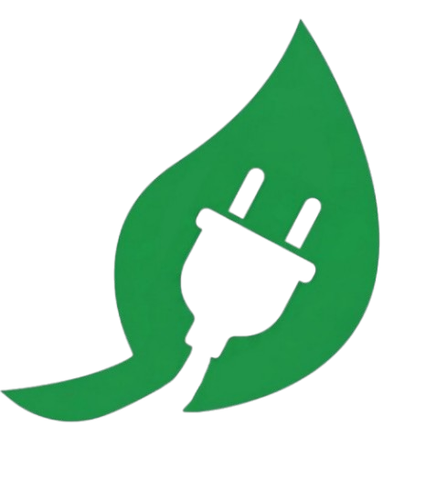

O Descarte Inteligente Comeca Aqui
Proteja os igarapes de Manaus e o meio ambiente. Encontre o ponto de logistica reversa mais proximo e participe da rede de troca inteligente.
Acessar Mapa Interativo
EletroLightEm um cenário onde a obsolescência programada e o consumo acelerado encurtam o ciclo de vida dos dispositivos, a gestão desses materiais torna-se uma prioridade estratégica para a sustentabilidade urbana.
Nesse contexto, o projeto EletroLight apresenta-se como uma resposta tecnológica robusta às lacunas de gestão de resíduos em Manaus. A iniciativa propõe uma plataforma digital integrada que atua como ponte entre o cidadão, as entidades de reciclagem e o conhecimento técnico.
Selecione um ponto na lista ou navegue pelo mapa para ver os detalhes.
Entenda os impactos do lixo eletrônico e descubra como você pode fazer a diferença na preservação do meio ambiente.
Lixo eletrônico (e-lixo) são equipamentos elétricos e eletrônicos descartados como celulares, computadores, TVs e eletrodomésticos. Esses resíduos contêm substâncias tóxicas como chumbo, mercúrio e cádmio, que podem contaminar o solo e a água se descartados de forma inadequada.
Devido ao Polo Industrial de Manaus, a nossa cidade lida com um volume imenso de eletrônicos. O descarte irregular em igarapés e lixeiras comuns causa contaminação por metais pesados, afetando diretamente a fauna, a flora e as nossas reservas de água.
O Brasil é um dos maiores geradores de lixo eletrônico do mundo, ficando atrás apenas da China, EUA, Índia e Japão. Nas Américas, é o segundo maior produtor, gerando mais de 2 milhões de toneladas em 2019. Apesar do volume alarmante, apenas cerca de 3% desse lixo é descartado de maneira ambientalmente responsável tanto no Brasil quanto na América Latina.
Acesse a página de Conteúdos Educativos para explorar todos os artigos e vídeos.
Eletrônicos anunciados pela comunidade para doação ou troca. Dê uma nova vida a esses dispositivos!